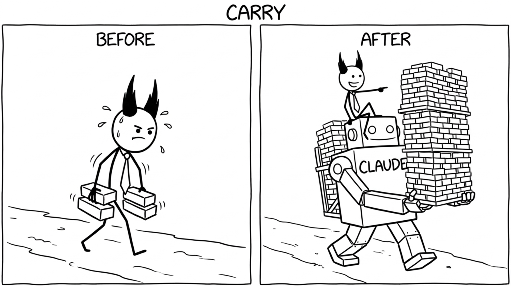

<section id="carry" data-transition="fade" style="display:flex; align-items:center; justify-content:center; padding:0; background:#fcfcfa">

<p style="position:absolute;left:0;bottom:10px;width:1920px;margin:0;text-align:center;font-family:'Patrick Hand', 'Trebuchet MS', sans-serif;font-size:22px;color:#8a8f98">Copyright Dobromir Montauk 2026</p>
<aside><b>Carry.</b> The old rule: managers shouldn't code. Your hours are fragmented, and if you take a critical-path ticket, it stalls every time you get pulled into a meeting.<br>What changed: with an AI coding agent, a 30-minute gap between meetings is enough to ship something real.<br>- Write the one-off migration or data-fix script nobody has time for.<br>- Prototype the feature to answer "is this even feasible?" before the planning meeting.<br>- Build the internal dashboard or report that ops has asked for twice.<br>The rule that hasn't changed: stay off the critical path. Carry the work that would otherwise never get done, not the work that blocks the team if you disappear for a day.</aside>
</section>
